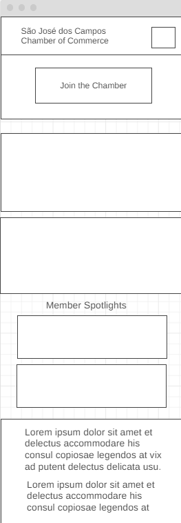
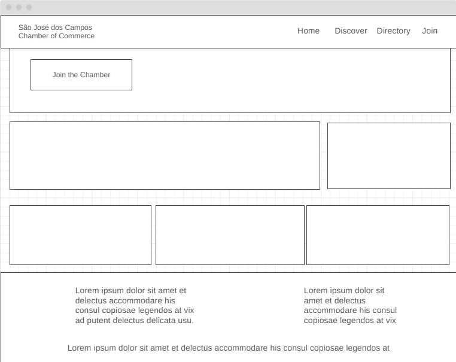

The São José dos Campos Chamber Planning Site aims to outline the goals and specifications for the development and running of the chamber's website. It serves as a guide for the design and content creation process.
Main Color: #8D8741
Accent Color: #659DBD
Other Color: #DAAD86
Other Color: #BC986A
Other Color: #FBEEC1
Main Font: Arial, sans-serif
Heading Font: Georgia, serif
Mobile View
Desktop View
